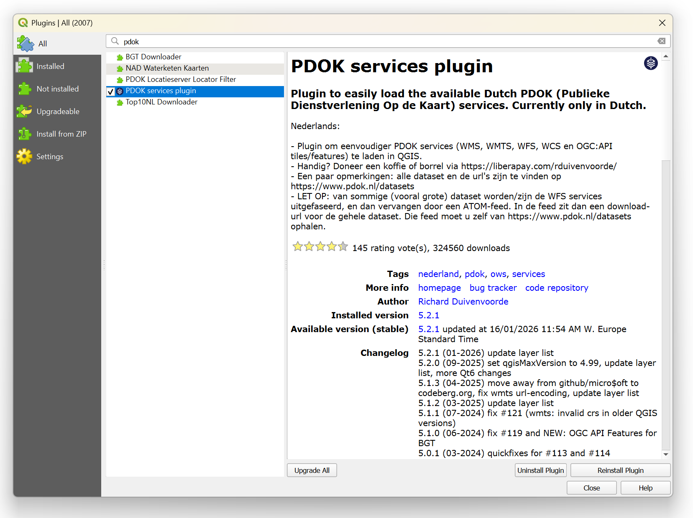
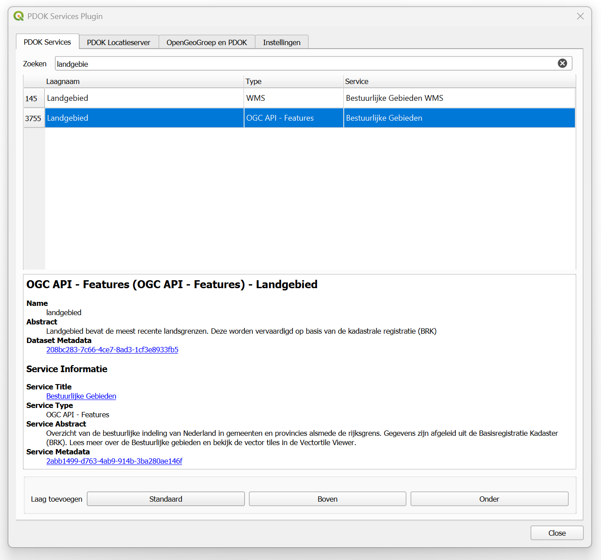
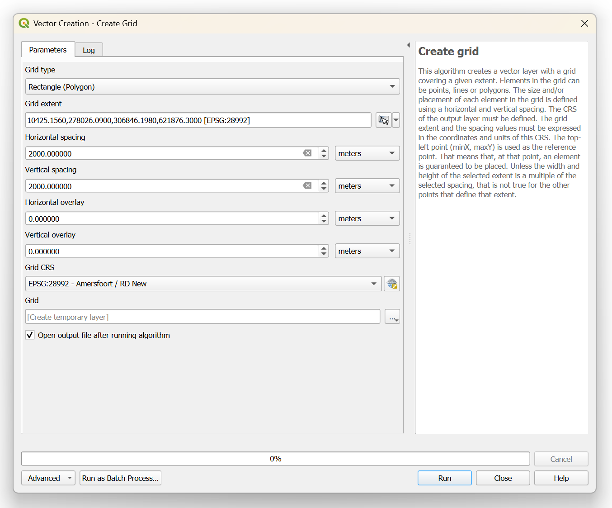
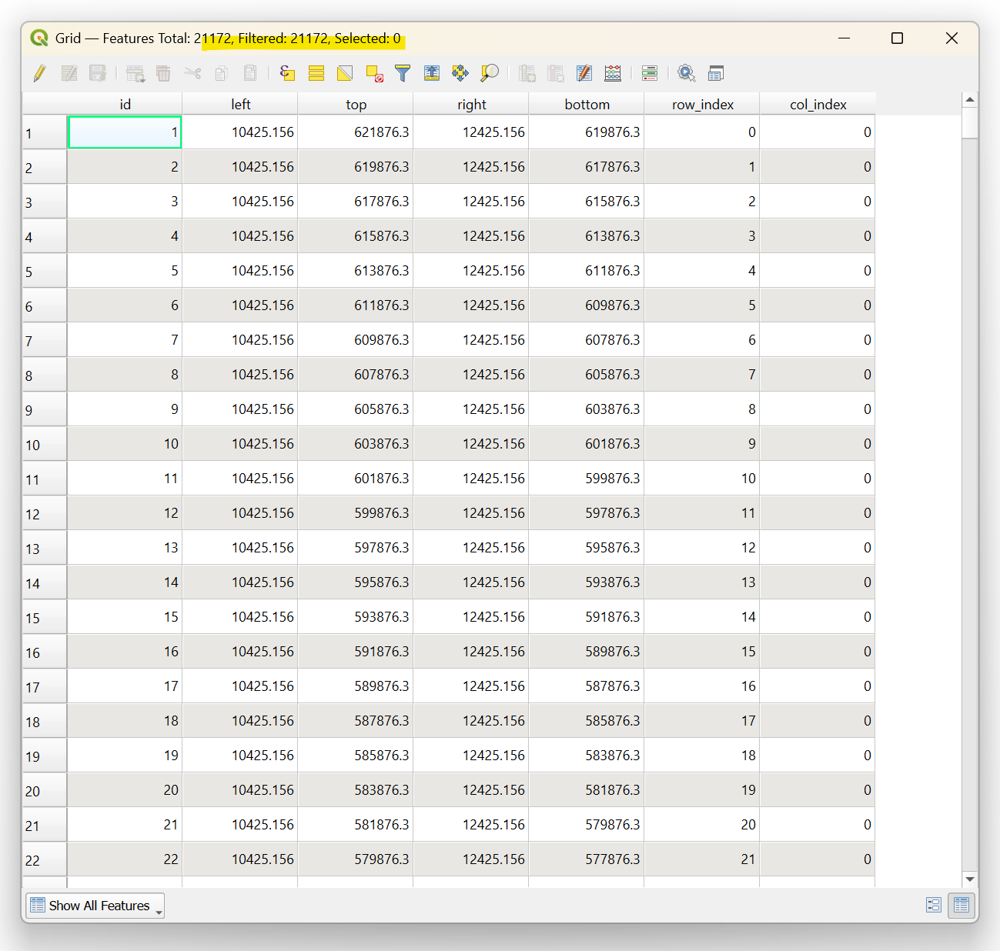
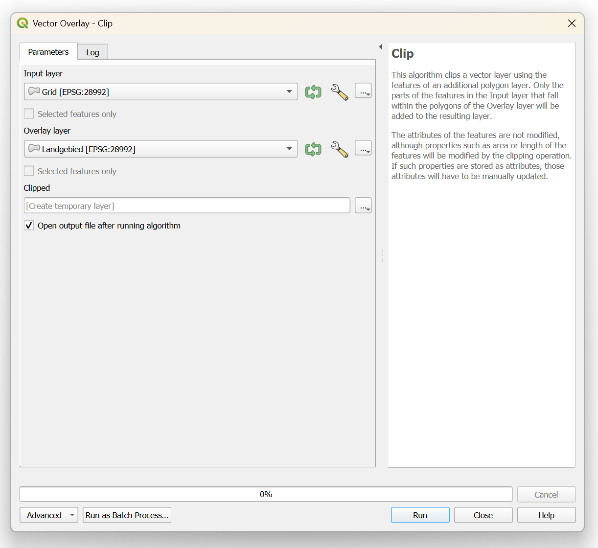
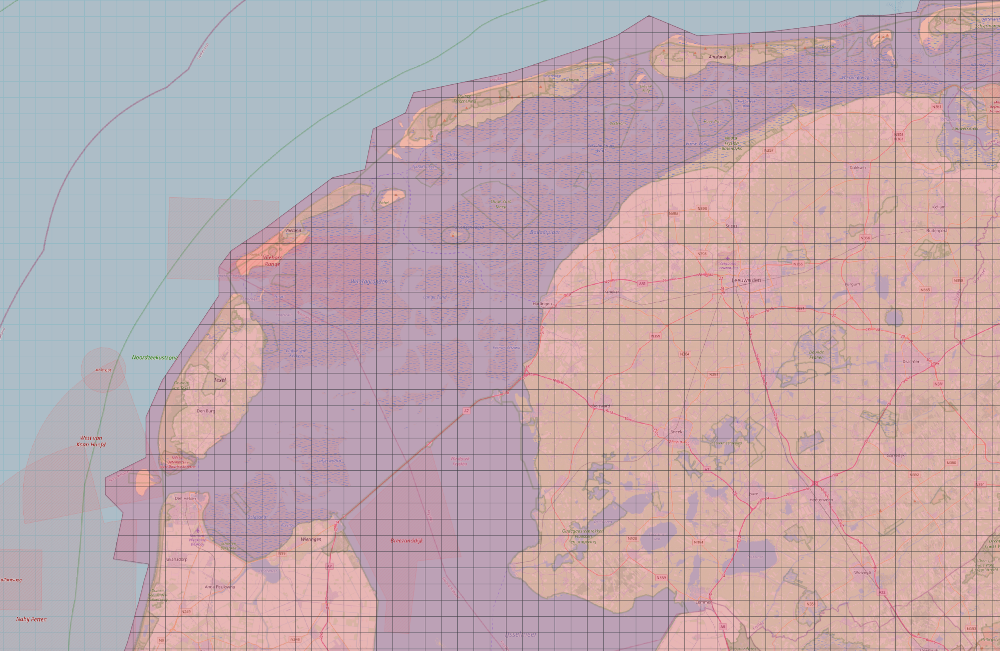
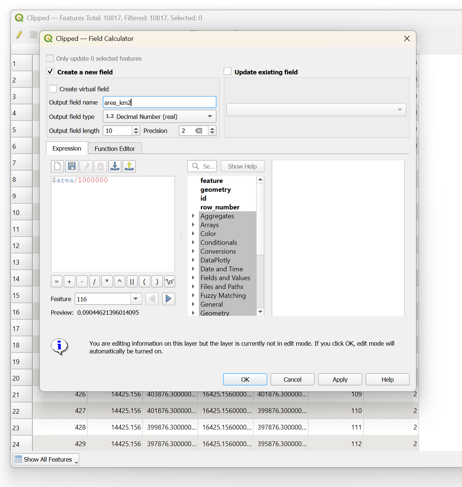
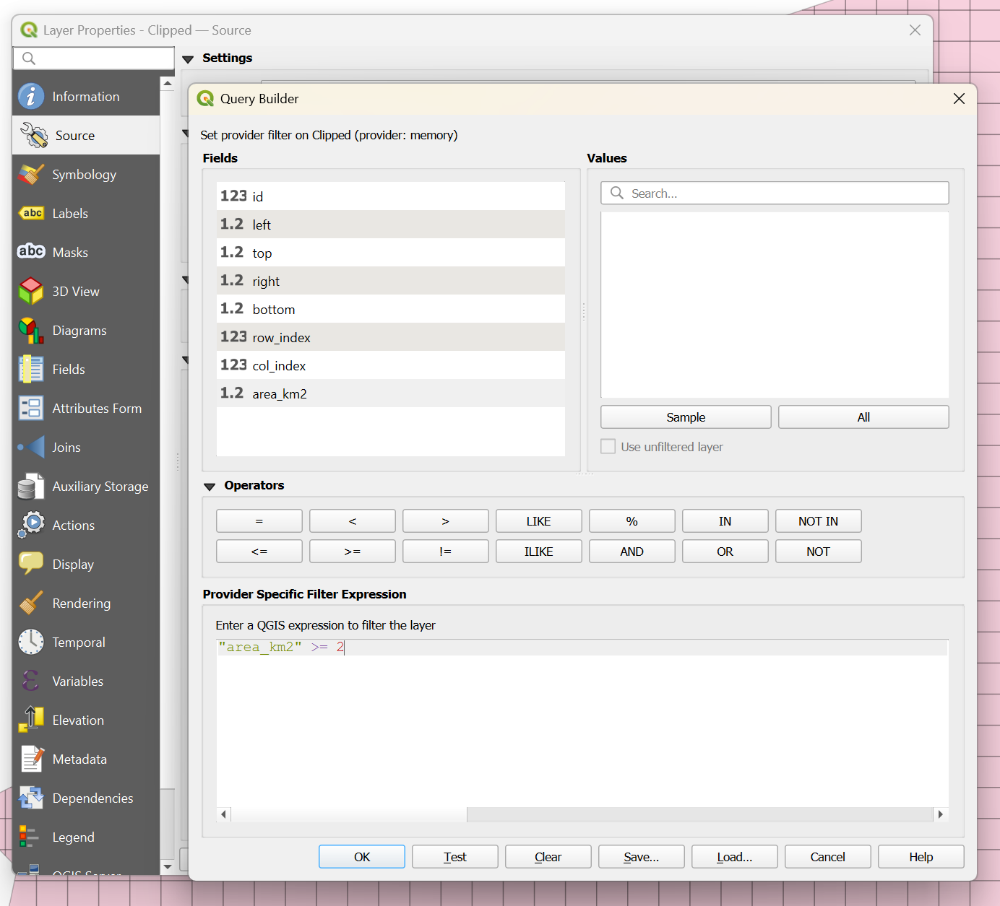

Creating a 2x2 km Fishnet Grid Using CBS Data
Duration: 60-75 minutes
Learning Goals
By the end of this tutorial, you will be able to:
- Install and use QGIS plugins (PDOK Services Plugin)
- Access Dutch national geographic datasets through web services
- Create regular grid structures (fishnet) with specific dimensions
- Understand and work with coordinate reference systems (EPSG:28992)
- Perform spatial clipping operations to match geographic boundaries
- Calculate geometric attributes (area) using Field Calculator
- Filter spatial data based on geometric criteria
- Understand the importance of data quality in grid-based analysis
- Prepare spatial frameworks for statistical data integration
Software and Data Required
Software: - QGIS 3.40 or higher - Internet connection for PDOK plugin and data access
Data sources: - PDOK Services Plugin (installed during tutorial) - Dutch national boundaries (Landgebied layer from PDOK)
Output files: - fishnet_2km.gpkg - Initial 2x2 km grid - fishnet_2km_clipped.gpkg - Grid clipped to national boundaries - fishnet_2km_filtered.gpkg - Final filtered grid (≥50% coverage)
Introduction
A fishnet grid is a regular rectangular mesh that divides a geographic area into uniform cells. This spatial framework is commonly used for:
- Statistical data aggregation - Standardized units for census and survey data
- Spatial sampling - Systematic selection of study locations
- Pattern analysis - Regular grid for density and distribution studies
- Data integration - Common framework for combining multiple datasets
In the Netherlands, Statistics Netherlands (CBS - Centraal Bureau voor de Statistiek) publishes data at various grid resolutions (100m, 500m, 1km). This tutorial creates a 2x2 km fishnet compatible with CBS statistical data, using the PDOK (Publieke Dienstverlening Op de Kaart) service for national boundaries.
Why 2x2 km? This resolution balances detail with computational efficiency, making it suitable for regional and national-scale analysis while remaining compatible with finer CBS grid data through aggregation.
Part 1: Setting Up PDOK Plugin and Loading Boundaries
Step 1.1: Install the PDOK Plugin
The PDOK Services Plugin provides easy access to Dutch national geographic datasets including administrative boundaries.
Open QGIS 3.40
Go to:
Plugins→Manage and Install PluginsIn the Plugins dialog, click on the All tab
In the search box, type: PDOK
Select PDOK Services Plugin from the results
Click Install Plugin
Wait for installation to complete, then click Close

PDOK (Publieke Dienstverlening Op de Kaart) is the Dutch national SDI (Spatial Data Infrastructure) that provides standardized access to key geographic datasets through web services. It includes administrative boundaries, topographic maps, cadastral data, and more.
Step 1.2: Load Dutch National Boundaries
Now we’ll use the PDOK plugin to load the Netherlands land area boundary.
Set the project CRS to EPSG:28992 (Amersfoort / RD New)
- Go to:
Project→Properties→CRS - Search for: 28992
- Select: EPSG:28992 - Amersfoort / RD New
- Click OK
- Go to:
Click on the PDOK Services Plugin icon in the toolbar (or go to
Web→PDOK Services Plugin)In the PDOK Services panel, type Landgebied in the search bar
Look for Typr: OGC API - Features
Double-click to add it to your map, or right-click and select Add to map
The national boundary should now appear in your Layers Panel and map canvas as Landgebied
Verify the CRS: Check the bottom right corner of QGIS. It should show EPSG:28992

The Rijksdriehoeksmeting (RD) New coordinate system is the standard projected CRS for the Netherlands. It uses: - Units: Meters (making 2 km = 2000 units straightforward) - Origin: Amersfoort tower - Coverage: Optimized for the Netherlands territory - Applications: All Dutch official mapping and cadastral work
Always verify this CRS when working with Dutch spatial data!
Note: If you prefer to work with a specific region or province instead of the entire country, you can also select provincial boundaries or municipal boundaries from the PDOK plugin.
Part 2: Creating the Initial Fishnet Grid
Step 2.1: Generate the Grid
Now we’ll create the 2x2 km fishnet grid using QGIS’s built-in grid creation tool.
Go to:
Vector→Research Tools→Create GridIn the Create Grid dialog, configure the following settings:
- Grid type: Select Rectangle (Polygon)
- Grid extent: Click the dropdown arrow
...next to the extent field and selectCalculate from Layer→ choose your Landgebied layer - Horizontal spacing: 2000 (meters)
- Vertical spacing: 2000 (meters)
- Grid CRS: EPSG:28992 - Amersfoort / RD New
For the output:
- Click the … button next to Grid
- Select
Save to File - Specify location and name:
fishnet_2km.gpkg
Click Run
Wait for processing to complete (this may take 30-60 seconds)
Once finished, click Close

Your fishnet grid should now appear on the map as a layer of 2x2 km squares covering the rectangular extent of the Netherlands.
The spacing values are in the units of your CRS. Since EPSG:28992 uses meters:
- 2000 = 2 kilometers
- 1000 = 1 kilometer
- 500 = 500 meters
For other grid sizes, simply adjust these values!
Challenge 1: Inspect Your Grid
Before proceeding to clip the grid, let’s examine what we’ve created. This exercise helps you understand the relationship between geographic extent and grid generation.
Task 1.1: Check the Layer Extent
Right-click on your fishnet_2km layer and select Properties
Go to the Information tab
Look at the Extent section. Record the coordinates:
- xMin: ___________
- xMax: ___________
- yMin: ___________
- yMax: ___________
Compare these to the Landgebied layer extent
Question: Are the extents identical? Why or why not?
You should see coordinates approximately: - xMin: ~10425 - xMax: ~278026
- yMin: ~306846 - yMax: ~621876
These represent the rectangular bounding box of the Netherlands in RD New coordinates.
Task 1.2: Count the Grid Squares
Right-click on your fishnet_2km layer and select Open Attribute Table
Look at the top of the attribute table window - you’ll see text like “Total features: X”
Record: How many grid squares did you create? ___________
Question: Based on the extent (approximately 267 km × 313 km), can you calculate the expected number of 2×2 km cells?

Task 1.3: Visual Inspection
Zoom to the full extent of both layers (right-click layer →
Zoom to Layer)Observe the map:
- Notice that the grid extends beyond the actual land area
- The grid includes areas over the sea
- It covers rectangular space including neighboring countries
Toggle layer visibility (checkbox in Layers Panel) to compare:
- Grid alone
- Landgebied alone
- Both together
Question: Why does the grid extend beyond the Netherlands boundary?
The Create Grid tool generates a rectangular grid covering the full bounding box of your reference layer. This means:
- Included: All complete 2×2 km cells within the bounding rectangle
- Not considered: The actual shape of the boundary (coastlines, borders)
- Result: Many cells over water, neighboring countries, and empty space
This is why we need clipping in the next step!
Part 3: Clipping the Grid to National Boundaries
Step 3.1: Perform the Clip Operation
The fishnet grid currently extends beyond the national boundary in a rectangular extent. To create a grid that matches the actual shape of the Netherlands, we need to clip it.
Go to:
Vector→Geoprocessing Tools→ClipIn the Clip dialog:
- Input layer: Select your fishnet_2km layer
- Overlay layer: Select the Landgebied layer
- Clipped: Click … and save as
fishnet_2km_clipped.gpkg
Click Run
After processing completes, click Close

You now have a fishnet grid that matches the Netherlands boundary. However, notice that many cells along the coastline and borders are only partially within the country.
The clip operation: 1. Takes each grid cell polygon 2. Intersects it with the boundary polygon 3. Keeps only the portion inside the boundary 4. Creates new “cookie-cutter” shapes along edges
Result: Cells completely inside remain square; edge cells become irregular polygons.
Step 3.2: Examine the Clipped Results
Open the attribute table of fishnet_2km_clipped
Record the new feature count: ___________
Compare to Challenge 1:
- Before clipping: 21.172 cells
- After clipping: _________ cells
- Reduction: _________ cells removed
Zoom to coastal areas and observe:
- Some cells are complete 2×2 km squares
- Others are partial (cut by coastline)
- Some are very small slivers

Challenge 2: Filter Partial Grid Cells
After clipping, many grid cells are only partially covered by land area. These partial cells can skew your analysis, especially when working with CBS data that assumes full grid cells. Let’s identify and remove cells with less than 50% coverage.
Task 2.1: Calculate the Area of Each Grid Cell
Open the attribute table of fishnet_2km_clipped
Enable editing mode (click the pencil icon or press
Ctrl+E)Open Field Calculator (click the abacus icon or press
Ctrl+I)Configure the area field:
- ☑ Check Create a new field
- Output field name:
area_km2 - Output field type:
Decimal number (real) - Output field length: 10
- Precision: 2
Enter this expression:
$area/1000000This calculates the area in square meters (since your CRS is EPSG:28992 in meters).
Click OK
Save edits (click the save icon) and toggle off editing mode

round($area, 2)- Round to 2 decimal places$area / 10000- Convert to hectares
area($geometry)- More explicit function (same result)
Task 2.2: Identify the Maximum Grid Cell Area
In the attribute table, click the area_km2 column header to sort by area (click twice for descending order)
Record the maximum area value: ___________ m²
Question: What is the expected area of a complete 2×2 km square?
Calculation:
Expected area = 2000m × 2000m = 4,000,000 m² = 4 km²- Scroll through the table and observe:
- Many cells have exactly 4 km² (or very close)
- Coastal/border cells have smaller values
- Some cells are very small (< 0,5 km²)
Task 2.3: Calculate Statistics on Area Distribution
Go to:
Vector→Analysis Tools→Basic Statistics for FieldsConfigure:
- Input layer:
fishnet_2km_clipped - Field to calculate statistics on:
area_km2
- Input layer:
Click Run
Review the output in the Results panel:
- Count: Total number of cells
- Min: Smallest cell area
- Max: Should be ~4,000,000 m²
- Mean: Average cell area
- Median: Middle value
Question: What percentage of cells are complete squares?
- If mean ≈ 4, most cells are complete
- If mean < 3,5, many partial cells exist
Task 2.4: Filter Out Small Partial Cells
Now we’ll remove cells with less than 50% of the maximum area (i.e., less than 2,000,000 m²).
Right-click fishnet_2km_clipped layer → Filter
In the Query Builder dialog, enter the following expression:
"area_km2" >= 2- Click Test to verify the filter works
- You should see a message like “Filter returned X features”
- Click OK to apply the filter

- Check your attribute table again:
- Note the new feature count (filtered)
- All visible cells now have area_km2 ≥ 2,000,000
The filter is temporary - it only hides features, doesn’t delete them. To make it permanent: - Export to new layer (recommended - see next step) - Or delete filtered-out features (destructive)
Removing the filter (Properties → Source → Query Builder → Clear) restores all features.
Task 2.5: Make the Filter Permanent
To create a new layer with only the filtered cells:
Right-click the filtered fishnet_2km_clipped layer →
Export→Save Features As...Configure export:
- Format:
GeoPackage - File name: Click … and save as
fishnet_2km_filtered.gpkg - ☑ Check Add saved file to map
- CRS: EPSG:28992 (should be default)
- Select fields to export: Keep all (or deselect unnecessary fields like
fid)
- Format:
Click OK
Clean up your workspace:
- Remove the filtered layer: right-click
fishnet_2km_clipped→Remove Layer - Keep the new
fishnet_2km_filteredlayer - Optionally remove the original unclipped grid
- Remove the filtered layer: right-click
Task 2.6: Compare Before and After
- Record final statistics:
| Stage | Number of Cells | Notes |
|---|---|---|
| Initial grid (before clip) | __________ | Rectangular extent |
| After clipping | __________ | Matches NL shape |
| After filtering (≥50%) | __________ | Only substantial cells |
| Cells removed by filter | __________ | Difference |
- Calculate the percentage removed:
Percentage removed = (Cells after clip - Cells after filter) / Cells after clip × 100%
= _________ %Question: Is this what you expected? Why might this percentage be high or low?
Understanding the Filtering Decision
Why Remove Partial Cells?
Let’s explore the reasoning behind the 50% threshold with concrete examples.
1. Data Accuracy
CBS and other statistical data are typically reported for complete grid cells. Consider population data:
Example - Coastal Cell: - Complete 2×2 km cell: 4,000,000 m² land area - Partial cell (30% land): 1,200,000 m² land area
If CBS reports “500 residents” for the grid cell: - Complete cell: 500 residents / 4 km² = 125 residents/km² - Partial cell: 500 residents / 1.2 km² = 417 residents/km² ❌ Misleading!
The partial cell appears to have 3× higher density, but this is an artifact of incomplete coverage.
CBS typically: - Reports data for cells with substantial coverage - May exclude or flag partial cells - Aggregates from finer resolutions (100m, 500m) - Assumes the grid cell represents the statistical unit
Using partial cells violates these assumptions!
2. Spatial Analysis Integrity
When performing calculations like totals or averages across neighborhoods:
Scenario: Summing building counts per neighborhood
| Cell Type | Land Area | Buildings | True Density | Calculated Density |
|---|---|---|---|---|
| Complete | 4.0 km² | 200 | 50/km² | 50/km² ✓ |
| 75% partial | 3.0 km² | 150 | 50/km² | 50/km² ✓ |
| 25% partial | 1.0 km² | 50 | 50/km² | 50/km² ✓ |
Problem: The 25% partial cell contributes the same weight to neighborhood statistics as complete cells, but represents less area.
3. Consistent Comparison
Scenario: Comparing commercial area across municipalities
| Municipality | Complete Cells | Partial Cells | Total Cells | Commercial Area |
|---|---|---|---|---|
| Rotterdam | 450 | 120 | 570 | 2,500,000 m² |
| Den Haag | 380 | 200 | 580 | 2,400,000 m² |
If we include partial cells: - Rotterdam: Higher proportion of complete cells → more reliable data - Den Haag: Many partial cells → potentially inflated/deflated statistics
Fair comparison requires comparable spatial units!
4. Coastline and Border Effects
Coastal Example:
[Complete Grid Cell] [Partial Cell - 20% land]
┌─────────────────┐ ┌─────────┐
│ LAND │ │ LAND │
│ │ │ │
│ │ ├─────────┘
│ │ │ WATER
│ │ │
└─────────────────┘ └─────────The partial cell: - May lack CBS data (below reporting threshold) - Represents coastal geography, not inland patterns - Could bias analyses toward maritime characteristics
5. The 50% Threshold
Why specifically 50%?
Too Strict (e.g., 90%): - Removes many valid cells - Loses data coverage in interesting regions - May create gaps in your analysis
Too Lenient (e.g., 10%): - Keeps cells with minimal coverage - Introduces unreliable data points - Reduces analysis quality
50% Balance: - Cell represents “more land than not” - Likely to have CBS data reported - Maintains good coverage - Industry standard for grid analysis
Depending on your analysis, you might choose:
- 75%: Conservative - very reliable cells only
- 60%: Moderate - slight preference for complete cells
- 40%: Lenient - accept cells that are “mostly there”
For CBS integration, 50-60% is recommended.
Visual Comparison
Let’s see the difference filtering makes:
Style your layers to visualize the difference:
Before filtering (fishnet_2km_clipped):
- Right-click → Properties → Symbology
- Fill: Transparent
- Stroke: Red, 0.4mm
After filtering (fishnet_2km_filtered):
- Fill: Light blue (50% transparent)
- Stroke: Dark blue, 0.6mm
Load both layers and compare:
- Toggle visibility
- Zoom to coastal areas
- Observe which cells were removed
What should you see: - Small slivers along coast: Removed ✓ - Narrow peninsulas: Partial cells removed ✓ - Interior regions: All cells retained ✓ - Island cells: Depends on size (Wadden Islands may lose some)
Part 4: Adding Grid Cell Identifiers
To make the fishnet useful for analysis and joining with CBS data, we should add unique identifiers and coordinate information to each cell.
Step 4.1: Create Unique ID Field
Open the attribute table of fishnet_2km_filtered
Enable editing mode (click the pencil icon)
Open Field Calculator
Configure the ID field:
- ☑ Create a new field
- Output field name:
grid_id - Output field type:
Whole number (integer) - Output field length: 10
Enter this expression:
$idThis assigns each feature its unique feature ID.
- Click OK
Step 4.2: Add Centroid Coordinates (optional)
CBS data often uses centroid coordinates as grid cell identifiers. Let’s add X and Y coordinates of each cell’s center.
Create center_x field:
Open Field Calculator (still in editing mode)
Configure:
- ☑ Create a new field
- Output field name:
center_x - Output field type:
Decimal number (real) - Output field length: 10
- Precision: 2
Expression:
x(centroid($geometry))- Click OK
Create center_y field:
Open Field Calculator again
Configure:
- ☑ Create a new field
- Output field name:
center_y - Output field type:
Decimal number (real) - Output field length: 10
- Precision: 2
Expression:
y(centroid($geometry))Click OK
Save edits and toggle off editing mode

CBS grid data typically uses the centroid (center point) of each grid cell as the spatial identifier. This allows joining:
- Your fishnet cell at centroid (125000, 487000)
- CBS data row with X=125000, Y=487000
- → Matched! Can transfer statistics to your grid
The coordinates are in RD New (meters), making them easy to work with.
Tips and Best Practices
CRS Consistency
Always verify all layers use EPSG:28992 when working with Dutch data:
- Check: Project → Properties → CRS
- Verify: Bottom-right corner of QGIS interface
- Fix: Right-click layer → Export → Reproject to EPSG:28992
The RD New system uses meters, making distance/area calculations intuitive (2 km = 2000 units).
Grid Resolution Selection
| Grid Size | Cell Area | When to Use |
|---|---|---|
| 100m × 100m | 0.01 km² | Detailed urban analysis, building-level patterns |
| 500m × 500m | 0.25 km² | Neighborhood characteristics, walking distances |
| 1km × 1km | 1 km² | District patterns, facility catchments |
| 2km × 2km | 4 km² | Regional trends, city-wide comparisons |
| 5km × 5km | 25 km² | Provincial analysis, macro patterns |
Your 2 km fishnet can aggregate data from finer resolutions (100m, 500m, 1km) using spatial joins and zonal statistics.
Performance Considerations
For large areas, fishnet grids can contain thousands of cells:
Optimization strategies: - Work with subsets first (single province) - Use GeoPackage format (faster than Shapefile) - Simplify analysis - don’t keep unnecessary attributes - Use spatial indexes: Vector → Data Management Tools → Create Spatial Index - Filter before processing (remove cells over water if appropriate)
Data Quality Checks
After joining CBS data, verify quality:
- Check for NULL values:
- Open attribute table
- Sort by CBS columns
- Investigate why some cells lack data
- Validate ranges:
- Use Basic Statistics tool
- Check min/max make sense
- Look for outliers (data errors or real phenomena?)
- Compare totals:
- Sum your aggregated values
- Compare to CBS published totals
- Should match within rounding error
Saving Your Work
Recommended file organization:
project_folder/
├── data/
│ ├── raw/
│ ├── boundaries/
│ │ └── landgebied.gpkg
│ └── grids/
│ ├── fishnet_2km.gpkg
│ ├── fishnet_2km_clipped.gpkg
│ └── fishnet_2km_filtered.gpkg
├── outputs/
└── project.qgzSave formats: - GeoPackage (.gpkg): Recommended - modern, efficient, single-file - Shapefile (.shp): Legacy - field name limitations, multiple files - GeoJSON: Good for web mapping
Documentation
Keep notes about: - Data sources: Where did CBS data come from? Which version? - Processing steps: What filters/joins were applied? - Field definitions: What does each column represent? - CRS information: Always EPSG:28992 for Dutch data - Date/version: When was the analysis performed?
This helps maintain reproducibility and data quality.
Common Issues and Solutions
Issue 1: PDOK Plugin Not Showing Layers
Symptoms: - PDOK panel is empty - Cannot load Landgebied layer
Causes & Solutions:
| Cause | Solution |
|---|---|
| No internet connection | Check network, try again |
| Plugin not activated | Plugins → Manage Plugins → check PDOK is enabled |
| PDOK service temporarily down | Try again later, check https://www.pdok.nl/status |
| Firewall blocking | Configure firewall to allow QGIS web services |
Issue 2: Grid Cells Are Not Square
Symptoms: - Cells appear rectangular or distorted - Grid doesn’t align with background maps
Diagnosis: 1. Check bottom-right corner of QGIS 2. Look at coordinate values (should be 5-6 digits in meters)
Solution: - If showing lat/lon coordinates: 1. Project → Properties → CRS 2. Search for: 28992 3. Select: EPSG:28992 - Amersfoort / RD New 4. Click OK 5. Right-click layers → Set Layer CRS → EPSG:28992
- If layers have wrong CRS:
- Right-click layer → Export → Save Features As
- Target CRS: EPSG:28992
- Replace old layer

Issue 3: Clip Operation Takes Too Long
Symptoms: - Clipping has been running for 5+ minutes - QGIS appears frozen
Solutions:
- Try different algorithm:
- In Clip dialog, click dropdown next to Run
- Try:
GDALinstead ofQGIS(or vice versa)
- Simplify boundary first:
Vector → Geometry Tools → Simplify
Tolerance: 10 meters
Use simplified Landgebied for clipping- Work in batches:
- Clip by province instead of whole country
- Merge results afterward
- Check processing settings:
- Processing → Options → General
- Increase thread count if you have multi-core CPU
Issue 4: Area Values Are Wrong
Symptoms: - Areas are tiny (< 1000) or huge (billions) - Area doesn’t equal expected 4,000,000 m²
Diagnosis:
| Area Value | Likely CRS Units | Problem |
|---|---|---|
| ~0.004 | Kilometers | ✓ Correct! |
| ~4,000,000 | Meters | Unit mismatch |
| ~0.015 | Degrees | Wrong CRS (lat/lon) |
| ~4,000,000,000,000 | Centimeters or error | Calculation error |
Solution: 1. Verify layer CRS is EPSG:28992 2. Recalculate area with correct CRS 3. Convert units if needed:
Area in hectares: $area / 10000
Area in km²: $area / 1000000Issue 5: CBS Data Won’t Join Properly
Symptoms: - All fishnet cells show NULL for CBS data - Only partial cells have CBS values
Possible causes:
Coordinate mismatch:
- Check: Are CBS coordinates in same CRS as fishnet?
- Fix: Reproject CBS layer to EPSG:28992
Resolution mismatch:
- Check: Is CBS data 100m but you’re joining on exact 2km centroids?
- Fix: Use spatial join within grid cells, not coordinate match
Field type mismatch:
- Check: Are join fields both numeric? Both text?
- Fix: Use Field Calculator to standardize:
Cast to integer: to_int("field_name") Cast to string: to_string("field_name") Round coordinates: round("center_x", 0)Precision issues:
- Check: Coordinates like 125000.00001 vs 125000
- Fix: Round before joining:
round("center_x", -2) -- Round to nearest 100
Issue 6: Function Names Appear Inconsistent
Symptoms: - Some tools have different names - Cannot find mentioned menu items
Cause: QGIS version or language differences
Solution: - English vs Dutch interface: - Settings → Options → General → Override system locale - Choose English for consistency with tutorial
- Version differences:
- This tutorial assumes QGIS 3.40
- Older versions may have tools in different locations
- Use Processing Toolbox search (Ctrl+Alt+T) to find tools by name
Extension Activities
Ready to go further? Try these advanced exercises:
Activity 1: Multi-Resolution Grid System
Create a nested grid system at multiple resolutions:
- Generate 1km × 1km grid using same workflow
- Generate 5km × 5km grid
- Style them with different colors
- Create spatial relationships (which 1km cells are within which 5km cells?)
Use case: Hierarchical aggregation from detailed to regional scale
Activity 2: Hexagonal Grid Alternative
Repeat the tutorial using hexagons instead of squares:
- In Create Grid dialog, choose Hexagon instead of Rectangle
- Horizontal spacing: 2000m (this is the side length)
- Compare hexagon vs square grids:
- Edge effects
- Number of cells
- Area calculations
Question: Why might hexagons be preferred for some analyses?

Activity 3: Custom Regional Grid
Create a fishnet for a specific province or municipality:
- Load provincial boundaries from PDOK instead of Landgebied
- Select your province of interest (e.g., Zuid-Holland)
- Export selection as new layer
- Use this as extent for grid creation
- Compare grid statistics between provinces
Summary
What You’ve Learned
By completing this tutorial, you have:
✓ Installed and configured the PDOK Services Plugin ✓ Loaded national boundaries from Dutch web services (Landgebied) ✓ Created a regular grid with specific dimensions (2km × 2km) ✓ Understood coordinate systems and the importance of EPSG:28992 ✓ Performed spatial clipping to match grid to geographic boundaries ✓ Calculated geometric attributes (area) using Field Calculator ✓ Applied data quality filtering to remove partial cells (< 50% coverage) ✓ Added unique identifiers and coordinate fields for data integration ✓ Prepared a spatial framework ready for CBS statistical data ✓ Visualized and styled vector data appropriately
Key Concepts Reinforced
| Concept | Application in Tutorial |
|---|---|
| Coordinate Reference Systems | EPSG:28992 (RD New) for Dutch data |
| Spatial Resolution | 2km × 2km cells as statistical units |
| Geoprocessing Workflows | Multi-step process: Create → Clip → Filter |
| Spatial Extent | Bounding box vs. actual boundary shape |
| Data Quality | Filtering partial cells for reliable analysis |
| Attribute Calculations | Field Calculator for area, IDs, coordinates |
| Data Integration | Preparing framework for joining statistical data |
Fishnet Grid Applications
Your completed fishnet grid can be used for:
- Statistical data aggregation - Joining CBS population, income, energy data
- Spatial sampling - Systematic sample point or area selection
- Heat mapping - Choropleth visualization of density, rates, totals
- Change detection - Temporal comparison of grid cell statistics
- Accessibility analysis - Distance calculations from cell centroids
- Pattern analysis - Spatial autocorrelation, clustering, hot spots
Files You Should Have
Verify your outputs folder contains:
- ☑
fishnet_2km.gpkg- Initial full rectangular grid - ☑
fishnet_2km_clipped.gpkg- Grid clipped to NL boundaries - ☑
fishnet_2km_filtered.gpkg- Final grid with ≥50% coverage cells - ☑ QGIS project file (
.qgz) with all layers configured
Next Steps
Immediate applications: 1. Download CBS grid data from https://opendata.cbs.nl 2. Join statistics to your fishnet 3. Create choropleth maps showing spatial patterns 4. Calculate neighborhood or municipal statistics
Further learning: - Explore other PDOK datasets (topography, cadastre, infrastructure) - Learn spatial statistics (Moran’s I, Getis-Ord Gi*) - Automate workflows with Python and QGIS processing - Create web maps with qgis2web or Leaflet
Additional Resources
QGIS Documentation
- Vector analysis tools: https://docs.qgis.org/latest/en/docs/user_manual/processing_algs/qgis/vectoranalysis.html
- Field calculator functions: https://docs.qgis.org/latest/en/docs/user_manual/working_with_vector/expression.html
- Geoprocessing tools: https://docs.qgis.org/latest/en/docs/user_manual/processing_algs/qgis/vectorgeometry.html